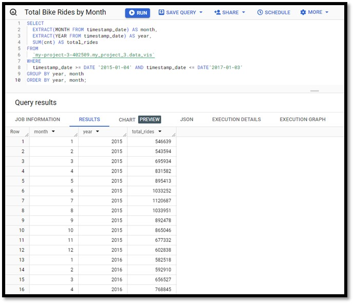

Introduction
In this project I will be going through the analysis of the 'London Bikie Sharing' dataset found on Kaggle. I will be primarily focusing on the data analysis and visualization phase and how we can use Tableau to gain better analysis and visualization to present to our stakeholders.
Statement of business task
A great way to help get your analysis across to stakeholders and to help build on the relationships is to be able to help visualize their data representing them as charts when presenting it to them. Interactive dashboards are also extremely useful as it allows them to also filter their data to give them more insight to their product. Using the Data set ‘London bike sharing’ I will be able to guide you how to create visuals and dashboard. I will create 4 different charts and 1 dashboard using Tableau and how you can use filtering and other different techniques to showcase the power of this software.
Preparing the data
- London Bike Sharing, by Hristo Mavrodiev on Kaggle. here.
- Open Government Licence – Meaning it is up to you to regularly review the licence.
- Contains hourly timestamp data on London bike shares over 2 years between the dates 04/01/2015 – 03/01/2017. It is organized in long format and gives information on its Metadata:
"timestamp" - timestamp field for grouping the data.
"cnt" - the count of a new bike shares
"t1" - real temperature in C
"t2" - temperature in C "feels like”.
"hum" - humidity in percentage
"wind_speed" - wind speed in km/h
"weather_code" - category of the weather
"is_holiday" - boolean field - 1 holiday / 0 non holiday
"is_weekend" - boolean field - 1 if the day is weekend
"season" - category field meteorological seasons: 0-spring; 1-summer; 2-fall; 3-winter.
"weather_code" category description: 1 = Clear; mostly clear but have some values with haze/fog/patches of fog/ fog in vicinity; 2 = scattered clouds / few clouds; 3 = Broken clouds; 4 = Cloudy; 7 = Rain/ light Rain shower/ Light rain; 10 = rain with thunderstorm; 26 = snowfall; 94 = Freezing Fog
- Dataset has only 1 file in CSV format organized in long format.
ROCCC Analysis
- Reliability : High – dataset was collected from hourly timestamps of the count of new bike shares that spans over 2 years.
- Originality : Low – third party data collected from Https://cycling.data.tfl.gov.uk/ meaning the originality is low.
- Comprehensive : Medium – Contains 1 dataset using only 10 columns but over 17,000 rows.
- Current : Low – data is 6 years old meaning the data measures could be drastically different with more up to date data.
- Cited : HIGH – data collector and source is well documented.
Data Selection
Focus is on the objectives listed in the Data Analysis section to analyze and produce visualizations and a dashboard with the available data. The dataset file name is listed as:
Processing the Data
I will be using Excel, Big Query and Tableau for this project. I am using Excel to clean the data set, Big Query for the analysis by creating SQL statements and I will be using tableau to create the visualizations which is the focus of this project.
Data Cleaning
Below is a step by step guide for the data cleaning process:- First, I download the dataset provided on the Kaggle page unzip the files and I store it in a folder titled ‘London_merged’.
- I open both csv files into Microsoft excel and look through the data that has been provided to me scanning for any errors, blank fields or duplicates particularly on columns that I need for my analysis.
- I am satisfied that the data set is clean and almost ready to use. Two things I have changed is the timestamp tab where I have split the date and time into separate columns and created a column of a unique ID for every row. Otherwise, the dataset is ready to be analysed.
- How does weather affect bike usage?
- What’s the total bike rides between specific periods?
- Total bike rides by month: 
- Total bike rides by week: To understand the total bike rides during a specific period I needed to split the date timeframe into months in one column and year into another. After that I was able to Sum the total amount of bike rides by month and conclude that during the months of June, July and August had the busiest time frame for bike shares.
- Filtered by one Month:
- Filtered by all months:
Data Integrity
Once I am happy with that the data is cleaned, I move it then on into Big Query for analysis. I want to check the number if unique Ids in the table to validate the integrity and I can do this by writing the following query: The result shows the dataset is consistent as we expected 17414 UniqueID from the table and gives us the certainty of a high level of integrity when analysing the data.
Data Analysis
For SQL querying I need to first Identify the Problems that I am trying to Analyse.
Answer: How does weather affect bike usage? In my table the weather code is classed by numbers to make it more legible I reference each code to the legend provided in the Kaggle page and using the WHEN and THEN clause in big query e.g. weather code 1 – Clear. I then group it by the weather code and in descending order I can conclude that almost 36% of the bike usage was during clear weather and as the weather gets progressively worse the bike usage falls.
Answer: What’s the total bike rides between specific periods?
Data Visualization
To create visualizations and a dashboard I used Tableau and a copy of the main excel sheet that where I updated some of the columns from their integer cells to their retrospective texts e.g Weather condition 1 = Clear, 2 = Scattered clouds etc. By using Tableau and the data I had access to I was able to create the following visuals below:
I first started out by creating a line chart that represented the total bike rides per month. To do this I placed the timestamp data in the columns section and the sum of the total bike rides in the rows section. For all my visuals I use an Orange to Blue colour divergence to represent the bike usage where Orange is the lower band usage of bike rides and Blue being the higher band usage of bike ride.
Next, I created a bar chart to show the total bike rides per season. To do this I grouped the Timestamp and the seasons into the columns section and again using the total rides as the rows.
 After that the next visual I created was another bar chart and here I wanted to display the total bike rides by weather condition to show how the weather conditions effected the usage of the bikes.
I then created a heatmap of the months vs weather condition using the total bike rides. Again, using the Orange to Blue colour divergence, I am able to use the orange to represent the low usage scale and the blue to represent the higher usage scale.
After has was happy with the number of visuals I had created I then grouped them altogether and created an interactive. I would be able to use this to present to my stakeholder’s dashboard so that I could present this to them as a more dynamic and user-friendly way. I could also use the dashboard to for insights into the data and drive data driven decision making.
After that the next visual I created was another bar chart and here I wanted to display the total bike rides by weather condition to show how the weather conditions effected the usage of the bikes.
I then created a heatmap of the months vs weather condition using the total bike rides. Again, using the Orange to Blue colour divergence, I am able to use the orange to represent the low usage scale and the blue to represent the higher usage scale.
After has was happy with the number of visuals I had created I then grouped them altogether and created an interactive. I would be able to use this to present to my stakeholder’s dashboard so that I could present this to them as a more dynamic and user-friendly way. I could also use the dashboard to for insights into the data and drive data driven decision making.
Conclusion
In Conclusion I able to effectively analyse and provide visualizations by using Tableau from the data provided to me and answering the objectives I had laid out. Now that I have come up with effective dashboard, I will now be able to showcase this to potential stakeholders.
- © Data Visualization